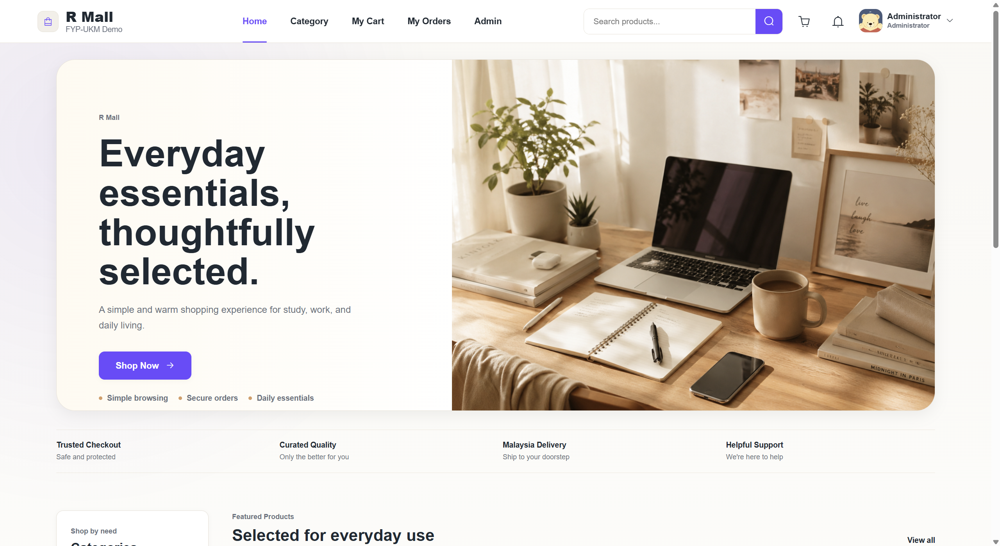
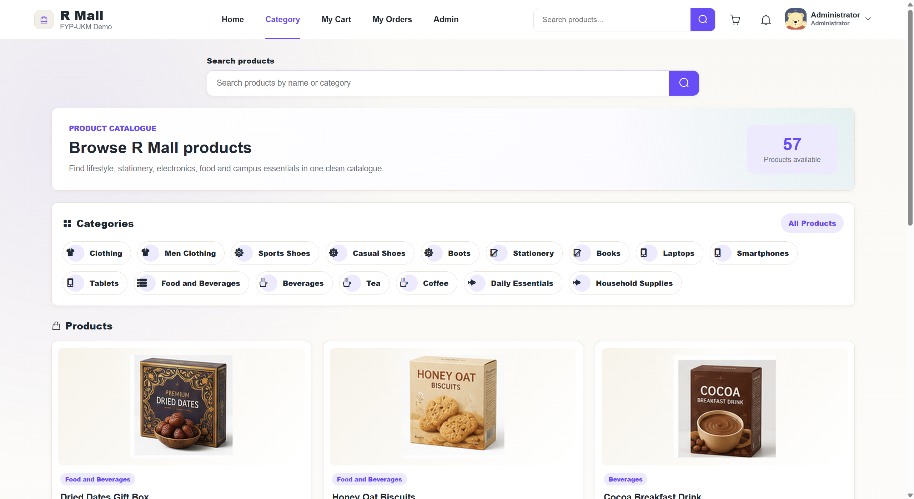
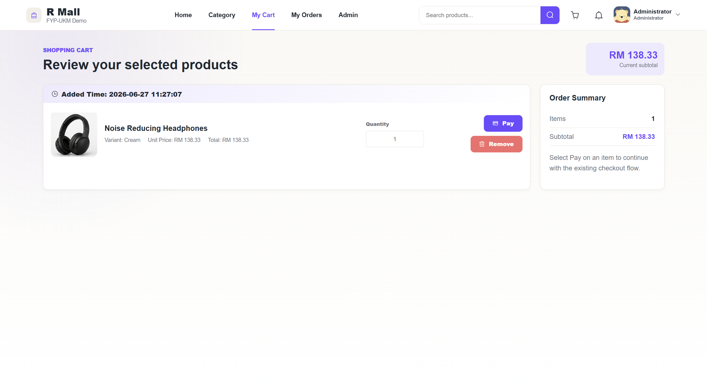
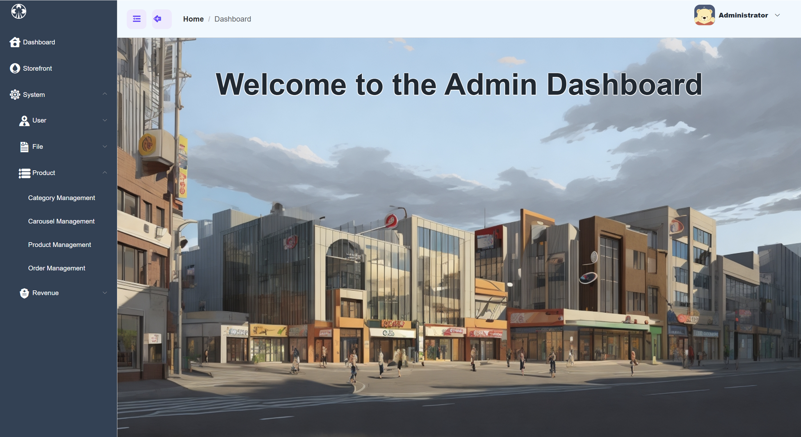

Typical stopping point
“The functions work on localhost.”
- One user completes the flow
- Application logic appears correct
- Network behaviour remains unknown
Network Technology · Final Year Project
DEVELOPMENT AND NETWORK PERFORMANCE EVALUATION OF A CLOUD-BASED SMALL ECOMMERCE PLATFORM

The problem
Typical stopping point
“The functions work on localhost.”
The project question
How do public requests travel — and what happens under concurrent access?
The goal was not a larger store. It was a deployable, explainable and measurable cloud application.
02 / 12Objectives & methodology
A bounded cloud e-commerce platform with complete customer and administrator workflows.
The communication path between browser, reverse proxy, backend and data services.
Network behaviour under controlled test parameters using Apache JMeter.
Main development process
English interface, RM currency, customer route checks.
Email codes, five-minute TTL, resend cooldown and session state.
Vue build, Spring Boot service, MySQL, Redis and Nginx on one VM.
API routing, history fallback, media paths and persistent uploads.
Repeatable scenarios, retained results and bounded interpretation.
Implemented system
The same golden path exercises public browsing, authenticated APIs, database reads, writes and state changes.
Users · products · categories · variants · orders · files · carousel records



Deployed request path
Google Cloud VM · public entry point
Critical implementation decisions
Problem
Decision
Nginx owns the public entry point; /api is proxied internally and SPA routes fall back safely.
Verified outcome
One consistent public request pathProblem
Decision
Redis stores verification codes, five-minute TTL, cooldown keys and session records.
Verified outcome
Repeatable account recovery and accessProblem
Decision
A persistent upload directory and explicit Nginx resource routing separate data from builds.
Verified outcome
Stable public product and avatar imagesLive system
One complete customer journey — followed by the administrator view.
Performance evaluation
Apache JMeter first verified each scenario with smoke testing, then repeated the public HTTP journeys using controlled thread, ramp-up and loop parameters.
Why only 10 mutation threads? These requests change live stock, cart and order data, so the workload was deliberately bounded to protect repeatability.
09 / 12Main test results
Observed across 35 retained result rows.
Results against objectives
Complete customer and administrator workflows deployed on a cloud VM.
Public HTTP, reverse-proxy and backend-to-data-service paths documented.
Eight scenarios measured through response time, P90, throughput and error rate.
Project contribution
A working application.
A documented cloud request path.
Evidence that explains how the deployed system behaved.